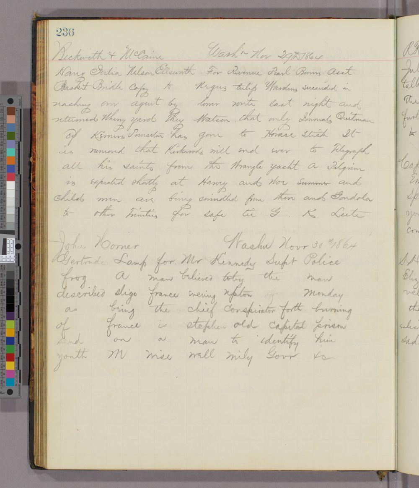

Private preview for review. Not published, not linked from anywhere.
Washington · 30 November 1864
“Send on a man to identify him”: a telegram about the plot to burn New York
A War Department telegram in the Union's code tells New York's police chief that a man believed to be the chief conspirator in the attempt to burn New York is in the Old Capitol Prison, and asks him to send someone to identify him.
What the reading says (the audit's depth sentence)
Kennedy, New York's police superintendent, is told that a man believed to be the chief conspirator of the attempt to burn New York, as described in Monday's Evening Post, is in the Old Capitol Prison, and asked to send someone to identify him.

The War Department telegraph's ledger copy, page 236: the telegram of 30 November 1864 is the lower entry. Huntington Library, Thomas T. Eckert Papers, mssEC 19 (item 9130).
The ledger copies the telegram word for word. Ordinary words travel as written; the code words (a frog, a town in Ireland, a country) stand for places, times and phrases. Reveal to see three layers per line: the line as written; the English as read, every sign graded (the audited layer); an English rendering (ours).
H read from a key sourceC from known plaintext or a period key tableS cryptanalytic, with a controlM uncertainI inferredU sign not covered by the keyclear written in clear on the page
Signed: four code words we have not read, then “Govr &c”.
Two more from the same ledger
7 Nov 1864, Dana to Wallace, Baltimore (N3, D3, 100%)Dana tells Wallace at Baltimore that a rebel agent calling himself Dr Hamilton passed through Elmira going south on Thursday last, six feet two, with light hair, moustache and whiskers and fine teeth, and to catch him.
26 May 1864, the War Department to Dix, New York (N3, D3, 96.4%)On 26 May 1864 the War Department warned General Dix at New York of a rebel plot to seize a steamer on the New York-New Orleans line and described three suspects who had come from Havana.
Each read at grade H with the same code book and audited as its own item; their pages are linked under “See the evidence” below. Quoted from each item's depth sentence.
See the evidence. The item pages this display rests on, each with its claim, grades, audits and links:
Thomas T. Eckertchief of the War Department telegraph
his clerks keep this ledger
John A. KennedyNew York's superintendent of police
the telegram is to him
Charles A. DanaAssistant Secretary of War
sends the Dr Hamilton telegram
Lew Wallacecommanding at Baltimore
told to catch Dr Hamilton
John A. Dixcommanding at New York
warned of the steamer plot
Context. Public-domain portraits are being fetched from Wikimedia Commons by a desk runner (portraits/manifest.tsv names each file and its licence); until a file arrives, the face is a labelled placeholder. No non-free image is used.
Context: the moment
Context from history, not from the cipher
Lincoln is re-elected.
Confederate agents set fires in about a dozen New York hotels and at Barnum's Museum; most are put out.
The New York Evening Post describes the plot's chief conspirator (reprinted in the Washington Evening Star, 29 Nov).
12.30 p.m.: the telegram to Superintendent Kennedy, in code.
Robert C. Kennedy, one of the arsonists (no relation), is hanged at Fort Lafayette.
Positions by latitude and longitude; no coastlines drawn.
Try it
Three signs from the key. Guess, then tap.
frog
tap to read it
New York
grade H · War Dept Cipher No. 1, p.14
sligo
tap to read it
in the
grade H · War Dept Cipher No. 1, p.21
upton
tap to read it
Post
grade H · War Dept Cipher No. 1, p.22
How we know
N3No prior plaintext or decipherment located after a logged search.
D3 · about 100%Largely deciphered: at least 80% of the cipher tokens read at firm grades, the gaps mostly names or codes, with an external check or a matched control.
Two audits8 Oct 2026 (first audit); 8 Oct 2026 (second, adversarial), each by a session other than the reader.
Grades of the 9 code words read: H 9
H
Whose key. Period key: the War Department's own Cipher No. 1 book (Huntington, Eckert Papers, mssEC 41), applied word for word. The plain words of the telegram are written in clear in the ledger.
The audit's sentence. Read at grade H with the period Cipher No. 1 book; no prior plaintext or decipherment of this telegram located after a logged search (the Post's description it cites is in print; the prisoner is not located).
Ledger page and line crops: The Huntington Library, San Marino, Thomas T. Eckert Papers, mssEC 19, page 236 (digital item 9130, hdl.huntington.org). Reuse terms not recorded in the repository; to be checked with the Huntington before any publication. Private mock-up only. Portraits: Wikimedia Commons, public domain, credits in portraits/manifest.tsv once fetched. Map drawn for this mock-up. English renderings are ours.